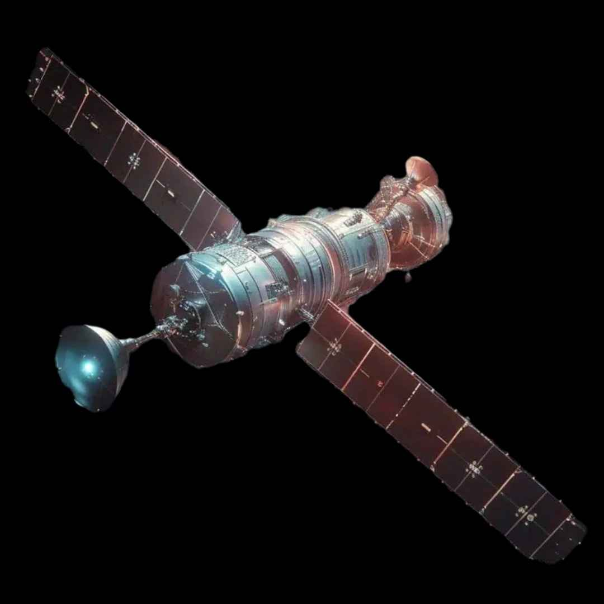

|
Comment l’Europe lutte pour éviter
les collisions spatiales : des solutions innovantes en action |
 |
|
Afin de prévenir les collisions dans l'espace, un enjeu critique à cause de l'augmentation des débris spatiaux,
L'Agence spatiale européenne (ESA) développe des technologies de détection et des logiciels avancés pour
surveiller les objets en orbite afin d'éviter les impacts. Parmi les nombreuses initiatives mises en place par
l'Europe, des systèmes d'intelligence artificielle sont utilisés pour optimiser les trajectoires
des satellites en temps réel.
|